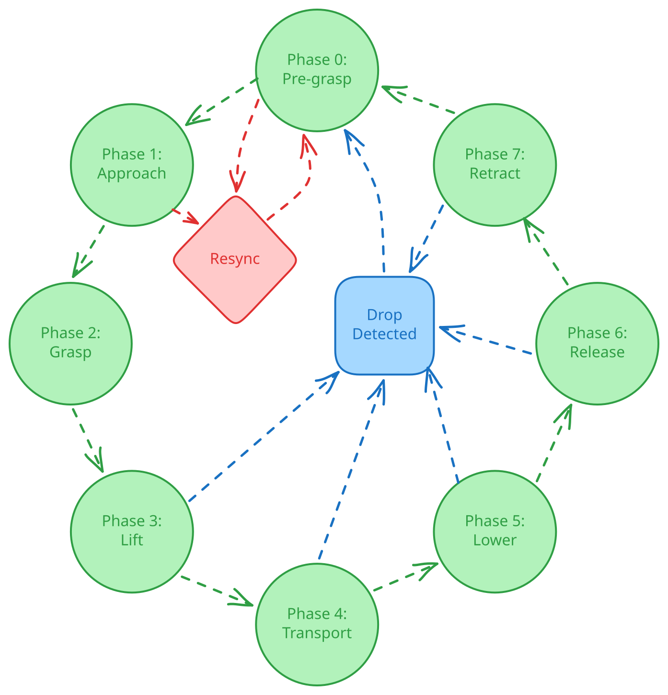
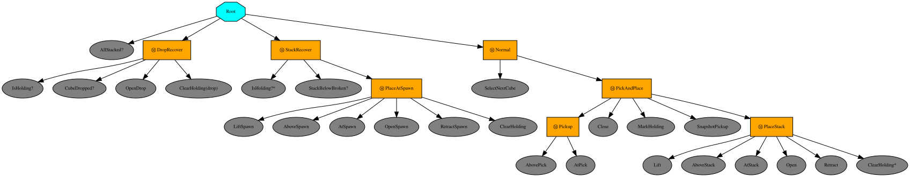
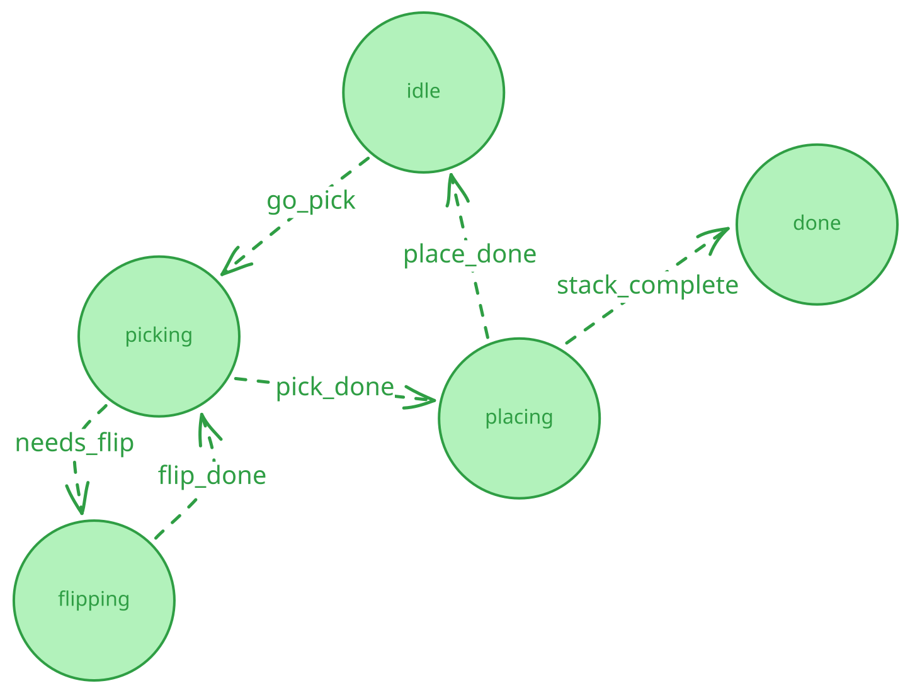

机器人行为的有限状态机#
注意
这些教程取代了已弃用的 Isaac Cortex 行为编程示例。它们使用应用自有的 Python 库和原生 Omniverse 行为树运行时，而不是自定义决策框架，来演示相同类型的反应式操作任务（Franka 方块堆叠、UR10 料箱码垛）。有关发布级别的指导，请参阅 Cortex 行为工作流迁移。 有关 Cortex 概念与此处使用的模式之间的映射关系，请参阅本页底部的 从 Cortex 迁移。
先决条件
请阅读 控制器与 RobotState 教程，以了解
RobotState、BaseController以及控制器组合。
运行示例
所有命令行示例均相对于 Isaac Sim 根目录编写，并使用 Isaac Sim Python 启动器。在 Linux 上，使用 ./python.sh。在 Windows 上，请改用
python.bat。
这些教程的独立 Python 示例打包在
standalone_examples/tutorials/state_machine/ 下。
何时使用有限状态机#
当你首次为多步骤任务编写控制器时，通常只需几个 if/elif
分支就够了：检查机器人刚刚完成了什么，然后决定下一步做什么。但随着任务的增长——步骤更多、恢复情况更多——
这些分支会在单个类中堆积，导致代码难以阅读且难以扩展。
状态机是常见的解决方案。它将 机器人建模为在任意时刻仅处于一个命名状态，并明确定义了哪些状态可以转换到哪些其他状态。每个状态和转换 都有自己独立的标记位置，而不是在日益增长的分支链中增加另一个分支。在以下情况下使用状态机：
任务包含多个有序步骤（接近、 抓取、提升、运输、放置、……），或者
某个事件应中断当前的动作序列，例如 重新抓取掉落的物体或围绕移动后的障碍物重新规划路径。
本页分为两部分：
无状态机控制器 (
franka_pick_place_ifelse.py)。 一个控制器类负责整个任务。它虽然可行，但展示了为什么不断增长的if/elif逻辑会变得难以维护。将任务逻辑与控制分离。Python Franka 示例共享一个控制器堆栈；UR10 示例使用其自己的控制器。四种方法以不同方式组织任务逻辑。
一个无库的状态机 (FSM) (
franka_pick_place_fsm.py)。PickPlacePhase为每个阶段命名，PickPlaceState存储一次传输的数据，而FrankaStackingFSM负责任务决策和状态转换。当任务是一系列固定阶段且你希望没有额外依赖时，这是最佳选择。使用 py_trees 的行为树 (
franka_pick_place_py_trees.py)。每个运动或夹爪动作都是一个 可复用的叶子节点Behaviour；恢复分支位于树的顶部， 因此它们会自动中断正常流程。当多个恢复分支必须按明确的优先级顺序相互抢占时，这是最佳选择。使用 Omniverse Behavior Tree 的USD 原生行为树 (
franka_pick_place.json)。注册的 Python 节点提供机器人 操作；JSON 将它们组合成从 USD 阶段运行并在 Behavior Tree UI 中可检查的行为。使用 transitions 的声明式状态机 (FSM) (
ur10_palletizing_transitions.py)。一个 UR10 从传送带上拾取料箱； 有些料箱是倒置的，因此机器人要么直接前往托盘， 要么通过翻转夹具绕行。该分支作为转换表中的一行存在，而不是步骤代码中的if/else。当状态图较小但有几条边根据世界状态进行分支时，这是最佳选择。
无状态机控制器#
4 立方体堆叠器（红 -> 蓝 -> 绿 -> 黄），未使用独立的状态机抽象编写。FrankaStackingIfElseController 同时负责任务决策和机器人控制：它通过 if/elif 逻辑推进阶段，驱动手臂控制器，并合并手臂和手指命令。任务上下文分散在实例属性中，例如 _color、_phase、_pickup_position 和 _aborted。
forward(): decide, react, and drive the arm and hand.
def forward(
self,
estimated_state: mg.RobotState,
setpoint_state: mg.RobotState | None,
t: float,
*,
observation: Observation,
**kwargs: object,
) -> mg.RobotState | None:
"""Decide, react, and drive the arm and hand -- all in one method."""
target_reached = self._target_reached(observation)
gripper_reached = self._gripper_reached(observation)
# Decide what to work on, react to the world, and advance the phase.
if (self._color is None or self._phase >= len(_PHASES)) and not self._select_next_cube(observation):
self.done = True
self._color = None
elif self._cube_was_dropped(observation):
print(f"[drop] {self._color} fell out of gripper, re-decide")
self._color = None
else:
self._restart_pickup_if_cube_moved(observation)
self._advance_if_ready(observation, target_reached, gripper_reached)
# Turn the current phase into an arm target and a gripper command, run
# the arm controller, and merge the finger command into its output.
phase = _PHASES[self._phase] if self._is_active() else "release"
self._target = self._compute_target(observation) if self._is_active() else None
self._gripper_open = phase not in _CLOSED_PHASES
setpoint = None if self._target is None else self._arm_setpoint(self._target)
arm_state = self._arm_controller.forward(estimated_state, setpoint, t, **kwargs)
gripper_state = self._gripper_command(self._gripper_open)
out_state = mg.RobotState()
for state in (arm_state, gripper_state):
out_state = mg.combine_robot_states(out_state, state)
if out_state is None:
return None
return out_state
控制器在每个 tick 执行三项任务：
评估上一条命令：手臂是否到达目标位置，夹爪是否达到指定宽度？
决策与响应：选择下一个立方体，从移动或掉落的立方体中恢复，并推进阶段。
驱动机器人：将当前阶段转换为手臂目标和夹爪宽度，运行手臂控制器，并将手指命令合并到其输出中。
这种方法可行，但扩展性较差：
任务上下文分散在属性中，而不是集中在状态对象里。
每增加一个新阶段或恢复情况，就会增加另一个分支。
该控制器是一个有用的起点，但新行为不断使同一个类膨胀。下一节将在介绍状态机示例之前，将任务逻辑与机器人控制分离。
运行它#
./python.sh standalone_examples/tutorials/state_machine/franka_pick_place_ifelse.py
按下 Play，然后拖动堆叠中间的立方体以触发响应式检查。
分离控制与任务逻辑#
结构化设计将移动机器人的小型控制器与选择每个阶段的任务策略分离。控制器不做任务决策，任务策略也不访问机器人 API。
Franka 示例构建一次控制端，然后将其与下面所示的无库依赖 FSM 或行为树配对。
小型单一用途控制器#
GripperController 命令两个 Franka 手指关节固定到一个宽度。
任务策略决定何时打开或关闭：
GripperController: command the hand to one width.
class GripperController(mg.BaseController):
"""Command the Franka finger joints to one fixed position."""
def __init__(self, *, joint_space: list[str], finger_joint_names: tuple[str, ...], target_position: float) -> None:
self._joint_space = joint_space
self._finger_names = [name for name in finger_joint_names if name in joint_space]
self._positions = wp.array([target_position] * len(self._finger_names), dtype=wp.float32)
def reset(
self, estimated_state: mg.RobotState, setpoint_state: mg.RobotState | None, t: float, **kwargs: object
) -> bool:
return True
def forward(
self, estimated_state: mg.RobotState, setpoint_state: mg.RobotState | None, t: float, **kwargs: object
) -> mg.RobotState:
return mg.RobotState(
joints=mg.JointState.from_name(
robot_joint_space=self._joint_space,
positions=(self._finger_names, self._positions),
)
)
手臂控制器使用 mg.BaseController 接口；这些示例使用
cuMotion RmpFlowController。
两个 CombinedController 实例将手臂运动与打开和关闭夹爪命令配对。
Pair the arm with an open or closed gripper.
# Pair the arm controller with an open or closed gripper. Each pair is a
# single controller that moves the arm and holds the hand at one width.
open_gripper = GripperController(
joint_space=joint_space,
finger_joint_names=_FINGER_JOINTS,
target_position=config.open_position,
)
closed_gripper = GripperController(
joint_space=joint_space,
finger_joint_names=_FINGER_JOINTS,
target_position=config.closed_position,
)
open_and_move = mg.CombinedController([arm_controller, open_gripper])
close_and_move = mg.CombinedController([arm_controller, closed_gripper])
使用 SelectableController 选择控制器#
SelectableController 按阶段键存储控制器：
Build the container: one controller per phase.
# Map every phase to the pair it needs. The container swaps between them
# by enum key and resets each controller the first time it becomes active.
self._controllers = mg.SelectableController(
controller_options={
PickPlacePhase.PRE_GRASP: open_and_move,
PickPlacePhase.APPROACH: open_and_move,
PickPlacePhase.GRASP: close_and_move,
PickPlacePhase.LIFT: close_and_move,
PickPlacePhase.TRANSPORT: close_and_move,
PickPlacePhase.LOWER: close_and_move,
PickPlacePhase.RELEASE: open_and_move,
PickPlacePhase.RETRACT: open_and_move,
},
initial_controller_selection=PickPlacePhase.PRE_GRASP,
)
每个 tick，PickPlaceController 将策略的阶段传递给
与策略无关的选择器，该选择器运行映射的控制器：
The one line that couples task logic to control.
# The policy chose a phase; the container maps it to the matching
# controller and runs it. This is the only line that couples the
# task decision to the low-level controllers.
self._controllers.set_next_controller(phase)
setpoint = None if self._target is None else self._setpoint(self._target)
return self._controllers.forward(estimated_state, setpoint, t, **kwargs)
Franka FSM 和行为树示例共享 FrankaStackingSceneIO 和
PickPlaceController；只有任务策略不同。UR10 示例使用
相同的分离方式，并带有其自己的控制器序列。
无库依赖 FSM#
与上述相同的 4 立方体堆叠演示，现在使用状态机。整数阶段
计数器被替换为命名的 PickPlacePhase 枚举值。
PickPlaceState 数据类存储活动立方体、目标位置、当前阶段、
计时以及恢复检查所需的缓存快照。FrankaStackingFSM
拥有此状态并返回一个 PickPlaceDecision。它没有场景或
机器人控制器访问权限。PickPlaceController – 上面构建的控制器
– 评估其先前命令的完成情况，运行 FSM，并将
结果阶段传递给容器。
PickPlaceState: active-transfer data.
@dataclass
class PickPlaceState:
"""State for one active cube transfer."""
color: str
destination: np.ndarray
phase: PickPlacePhase
phase_started: float
settle_started: float | None = None
pickup_position: np.ndarray | None = None
cube_reference_xy: np.ndarray | None = None
aborted: bool = False
@property
def holding(self) -> bool:
return self.phase in {PickPlacePhase.LIFT, PickPlacePhase.TRANSPORT, PickPlacePhase.LOWER}
八个枚举值为 PRE_GRASP、APPROACH、GRASP、LIFT、TRANSPORT、LOWER、RELEASE 和 RETRACT。
控制器在机器人接近过程中使用实时立方体位姿，
然后在抓取后切换到冻结的 pickup_position 快照。


八阶段抓取放置循环。当机器人持有立方体时，掉落检测会清除当前活动传输；如果在接近过程中立方体发生移动，拾取重新同步将返回到 PRE_GRASP。#
反应式检查位于 forward() 的顶部；它们在常规阶段调度之前运行：
forward(): per-step reactive checks.
def forward(self, observation: Observation, *, target_reached: bool, gripper_reached: bool) -> PickPlaceDecision:
"""Advance once from an observation and controller feedback."""
if self._active is None:
self._active = self._select_next_cube(observation)
if self._active is None:
return PickPlaceDecision(done=True)
if self._cube_was_dropped(observation):
print(f"[drop] {self._active.color} fell out of gripper, re-decide")
self._active = None
return PickPlaceDecision()
self._restart_pickup_if_cube_moved(observation)
self._advance_if_ready(observation, target_reached, gripper_reached)
return self._decision()
此处运行两个每 tick 的反应式检查：
掉落检测：如果我们正持有一个立方体，且该立方体与末端执行器（EE）连杆的距离漂移超过 10 cm，则说明夹爪已丢失该立方体。清除当前活动任务，让下一个
forward()重新决策。控制器会发出安全保持/打开命令。拾取重新同步：如果我们正接近一个仍在地面上的立方体（尚未有
pickup_position），且该立方体被推离了我们最初看到它的位置超过 5 cm，则返回到PRE_GRASP，以便下降过程从干净的状态重新对准。
第三个反应式检查 堆叠有效性检查 在每个命名阶段推进时运行，而不是每个 tick 都运行：
_advance: phase-boundary stack-health check.
def _advance(self, observation: Observation, reason: str = "ok") -> None:
active = self._active
assert active is not None
print(f" [{active.color}] {active.phase.name.lower()} done ({reason})")
if active.phase is PickPlacePhase.RETRACT:
self._active = None
return
active.phase = self._NEXT_PHASE[active.phase]
active.phase_started = observation.time
active.settle_started = None
if active.phase is PickPlacePhase.GRASP:
active.pickup_position = observation.cube_positions[active.color].copy()
if active.holding and not active.aborted and not self._stack_below_is_valid(active.color, observation):
print(f"[abort] stack invalid below {active.color}, returning to spawn")
active.destination = self._config.spawn_positions[active.color].copy()
active.aborted = True
每次阶段推进时，如果我们正持有一个立方体，且堆叠顺序中位于其下方的任意立方体发生了位移：
将目标位置重定向到该立方体的生成位置，以便安全放下持有的立方体。
当前活动传输完成后，
_select_next_cube()会拾取发生位移的立方体并重新堆叠。
当 RETRACT 完成时，FSM 会清除 PickPlaceState，以便下一个 forward() 选择下一个立方体。

运行它#
./python.sh standalone_examples/tutorials/state_machine/franka_pick_place_fsm.py
在视口中按下 Play。在机器人堆叠过程中拖动一个立方体，以查看堆叠恢复路径在重新堆叠之前先归还已抓取的立方体。
使用 py_trees 的行为树#
相同的 4 立方体堆叠演示和 FrankaStackingSceneIO 后端，
实现为 py_trees 行为树。关键概念：
节点树。 每个叶子
Behaviour在每次 tick 时返回RUNNING、SUCCESS或FAILURE。复合节点（
Sequence、Selector）根据这些返回值决定 接下来运行哪个子节点。黑板：一个共享的键值存储，任何节点都可以读取或写入， 此处用于
pick_target、holding和pickup_position。
两个可复用的叶子 Behaviour 类覆盖了该演示：
Phase– 所有运动和夹爪阶段。Action– 黑板更新。
Leaf Behaviour classes for motion and gripper actions.
class Phase(py_trees.behaviour.Behaviour):
"""Run one phase using the current observation and prior-command feedback."""
def __init__(self, context: _Context, phase: PickPlacePhase, *, spawn: bool = False, drift: bool = False) -> None:
super().__init__(phase.name.title())
self.context = context
self.phase = phase
self.spawn = spawn
self.drift = drift
self.bb = py_trees.blackboard.Client(name=self.name)
for key in ("pick_target", "holding", "pickup_position"):
self.bb.register_key(key, access=py_trees.common.Access.READ)
self.bb.register_key(key, access=py_trees.common.Access.WRITE)
def initialise(self) -> None:
"""Reset phase timing."""
self._started = self.context.observation.time
self._settle_started: float | None = None
self._anchor_xy: np.ndarray | None = None
self._first_tick = True
if self.phase is PickPlacePhase.GRASP:
color = self.bb.pick_target
self.bb.pickup_position = self.context.observation.cube_positions[color].copy()
def update(self) -> py_trees.common.Status:
"""Emit the phase decision and report progress."""
observation = self.context.observation
color = self.bb.holding if self.spawn else self.bb.pick_target
self._publish_decision(color)
if self._pickup_target_drifted(observation, color):
print(f" [{self.name}] target drifted, restarting pickup")
return S.FAILURE
return S.SUCCESS if self._phase_finished(observation) else S.RUNNING
def _publish_decision(self, color: str) -> None:
destination = (
self.context.config.spawn_positions[color] if self.spawn else self.context.config.stack_positions[color]
)
pickup = self.bb.pickup_position if self.bb.pickup_position is not None else None
self.context.decision = PickPlaceDecision(
phase=self.phase,
color=color,
destination=destination,
pickup_position=pickup,
)
def _pickup_target_drifted(self, observation: Observation, color: str) -> bool:
if not self.drift:
return False
current_xy = observation.cube_positions[color][:2]
if self._anchor_xy is None:
self._anchor_xy = current_xy.copy()
return False
return bool(np.linalg.norm(current_xy - self._anchor_xy) > self.context.config.cube_move_tolerance)
def _phase_finished(self, observation: Observation) -> bool:
elapsed = max(0.0, observation.time - self._started)
if self.phase is PickPlacePhase.GRASP:
return elapsed >= self.context.config.minimum_duration
if self.phase is PickPlacePhase.RELEASE:
return elapsed >= self.context.config.minimum_duration and self.context.gripper_reached
if not self._first_tick and self.context.target_reached:
if self._settle_started is None:
self._settle_started = observation.time
else:
self._settle_started = None
self._first_tick = False
settled = (
self._settle_started is not None
and observation.time - self._settle_started >= self.context.config.settle_duration
)
short = self.phase in {
PickPlacePhase.APPROACH,
PickPlacePhase.LIFT,
PickPlacePhase.TRANSPORT,
PickPlacePhase.LOWER,
}
timeout = self.context.config.short_phase_timeout if short else self.context.config.phase_timeout
if elapsed >= self.context.config.minimum_duration and settled:
return True
if elapsed >= timeout:
print(f" [{self.name}] timeout, advancing")
return True
return False
class Action(py_trees.behaviour.Behaviour):
"""Run one blackboard action."""
def __init__(self, name: str, action: Callable[[], None]) -> None:
super().__init__(name)
self._action = action
def update(self) -> py_trees.common.Status:
"""Run the action."""
self._action()
return S.SUCCESS
每个抓取和放置动作都是树中的一个叶子节点。
组合逻辑位于 build_tree 中：
build_tree: root Selector, recovery branches, normal flow.
def build_tree(context: _Context) -> py_trees.trees.BehaviourTree:
"""Build the reactive stacking tree."""
bb = py_trees.blackboard.Client(name="stacking")
for key in ("pick_target", "holding", "pickup_position"):
bb.register_key(key, access=py_trees.common.Access.READ)
bb.register_key(key, access=py_trees.common.Access.WRITE)
bb.pick_target, bb.holding, bb.pickup_position = "", None, None
phase = lambda value, **kwargs: Phase(context, value, **kwargs)
action = lambda name, fn: Action(name, fn)
def clear_dropped() -> None:
bb.holding = None
context.decision = PickPlaceDecision()
pickup = py_trees.composites.Sequence(
"Pickup",
memory=True,
children=[phase(PickPlacePhase.PRE_GRASP), phase(PickPlacePhase.APPROACH, drift=True)],
)
place = py_trees.composites.Sequence(
"Place",
memory=True,
children=[
phase(PickPlacePhase.LIFT),
phase(PickPlacePhase.TRANSPORT),
phase(PickPlacePhase.LOWER),
phase(PickPlacePhase.RELEASE),
phase(PickPlacePhase.RETRACT),
action("ClearHolding", lambda: setattr(bb, "holding", None)),
],
)
normal = py_trees.composites.Sequence(
"Normal",
memory=True,
children=[
SelectNextCube(context, bb),
pickup,
phase(PickPlacePhase.GRASP),
action("MarkHolding", lambda: setattr(bb, "holding", bb.pick_target)),
place,
],
)
drop_recovery = py_trees.composites.Sequence(
"DropRecovery",
memory=True,
children=[
CubeDropped(context, bb),
action("ClearDropped", clear_dropped),
],
)
stack_recovery = py_trees.composites.Sequence(
"StackRecovery",
memory=True,
children=[
StackBelowBroken(context, bb),
phase(PickPlacePhase.LIFT, spawn=True),
phase(PickPlacePhase.TRANSPORT, spawn=True),
phase(PickPlacePhase.LOWER, spawn=True),
phase(PickPlacePhase.RELEASE, spawn=True),
phase(PickPlacePhase.RETRACT, spawn=True),
action("ClearHolding", lambda: setattr(bb, "holding", None)),
],
)
root = py_trees.composites.Selector(
"Root",
memory=False,
children=[AllStacked(context, bb), drop_recovery, stack_recovery, normal],
)
tree = py_trees.trees.BehaviourTree(root)
tree.setup()
return tree
该树的结构是标准的反应式树模式：
根节点是一个
Selector(memory=False)。Selector从左到右尝试其 子节点，并在第一个返回RUNNING或SUCCESS的子节点处停止；memory=False意味着它 每次 tick 都从最左侧的子节点重新开始，而不是从上次中断处继续。 因此，放置在正常流程左侧的恢复分支在激活时会自动优先执行。Sequence节点（用于恢复分支以及Pickup、Place和Normal子树中）从左到右运行其子节点， 并在任一子节点失败时立即失败。一个FAILURE会中止整个 子树，这使我们能够将任何叶子的失败转换为干净的重启。AllStacked是最左侧的终止条件。掉落恢复是优先级最高的恢复分支：
CubeDropped? -> ClearDropped。树控制器发出安全保持/打开命令。堆叠恢复位于掉落恢复和正常流程之间：
StackBelowBroken? -> drive to spawn, release。正常流程是最右侧的分支：
SelectNextCube写入 黑板目标，然后Pickup、Grasp和Place执行传输。
每个 Behaviour 都声明其读取和写入的黑板键，
因此数据流是显式的。
立方体漂移处理使用 Phase(drift=True) 作为
正常流程的重启：
立方体移动超过漂移阈值 – 叶节点返回
FAILURE。外层的
Sequence将失败向上传播。下一个 tick，根
Selector从头重新进入正常分支， 重启拾取操作。

Franka 堆叠器的行为树。恢复分支位于正常流程的左侧， 因此当条件触发时会自动抢占。#

运行它#
./python.sh standalone_examples/tutorials/state_machine/franka_pick_place_py_trees.py
控制台每 60 帧打印一次 unicode 树；观察 [*]
状态指示器随着分支激活而移动。
使用 Omniverse Behavior Tree 的行为树#
Omniverse Behavior Tree 提供了 Kit 原生运行时、JSON 描述符、 类型化端口和黑板、USD 附件以及可视化编辑器。在本 示例中，两个 Franka 拆解一个六立方体金字塔，并各自构建一个三立方体 堆栈。Python 节点处理机器人动作和协调，而一个可复用的 JSON 描述符定义任务。
请参阅 Behavior Tree 用户指南 以了解编写和调试方法，并参阅 API 参考 以了解自定义节点库。
本示例重点介绍了五种实用模式：
自定义节点库。 Python 节点使用 cuMotion RMPflow 进行运动控制， 并提供夹爪控制、立方体预留、任务检查和恢复功能。
@node装饰器声明每个节点及其类型化端口。on_tick方法返回RUNNING、SUCCESS或FAILURE。单一共享描述符。
franka_pick_place.json使用Selector、Sequence、Repeat和Timeout组合这些节点。两台 Franka 机器人运行此同一文件的独立实例。本地和共享黑板。 本地变量保存每台机器人当前的 立方体、目标路径和恢复键。
/BehaviorTreeBlackboard保存 由两台机器人共享的立方体预留、中心工作区锁和放置计数。运动 和检查端口在 JSON 中绑定到本地路径； 协调节点直接访问共享状态。反应式恢复。 当立方体移动或掉落时，运动、夹爪和验证节点会设置 每台机器人的标志。高优先级分支使用
CheckBlackboard以低优先级中止模式等待立方体 稳定，在其新姿态上方就位，并重试同一预留。恢复 重试未收敛的目标，每五秒记录一次警告，并在立方体 变得可抓取时恢复拾取操作。USD 管理的执行。
BehaviorTreeAPI在/World/franka_left和/World/franka_right之间链接 JSON 和共享黑板。按下 Play 会创建并 tick 两个实例；Behavior Tree 窗口显示 它们的实时状态。
FrankaAcquireCube: reserve shared work and populate local state.
@node(
type="FrankaAcquireCube",
doc="Atomically reserve the next pyramid cube and publish robot-local motion targets.",
keywords=["franka", "coordination", "blackboard", "reservation"],
)
class FrankaAcquireCube(_FrankaNodeBase):
"""Reserve one shared cube and configure target Xforms for this robot."""
def on_tick(self, context: IBehaviorActionNodeContext) -> NodeStatus:
"""Acquire the center-zone lock and reserve the next available cube."""
if self._resolve_robot() is None:
return self._status_while_resolving()
shared = context.get_blackboard()
local = _get_local_blackboard(context)
if local is None:
carb.log_error("[FrankaAcquireCube] Tree-local blackboard is unavailable")
return NodeStatus.FAILURE
robot_id = _get_robot_id(self.get_prim_path())
current_cube = _get_local_string(local, "current_cube")
center_owner = str(_blackboard_get(shared, "center_owner", "") or "")
if center_owner and center_owner != robot_id:
return NodeStatus.RUNNING
selected_new_cube = not current_cube
if selected_new_cube:
cube_paths = _PYRAMID_CUBE_PATHS
if robot_id == "right":
cube_paths = tuple(_PYRAMID_CUBE_PATHS[index] for index in (0, 2, 1, 5, 4, 3))
for cube_path in cube_paths:
state_key = f"cube_state:{cube_path}"
if _blackboard_get(shared, state_key, "available") == "available":
current_cube = cube_path
break
if not current_cube:
return NodeStatus.FAILURE
placed_count = int(_blackboard_get(shared, f"placed_count:{robot_id}", 0))
try:
cube_position = RigidPrim(current_cube).get_world_poses()[0].numpy()[0]
stack_y = -0.28 if robot_id == "left" else 0.28
goal_position = np.asarray([0.46, stack_y, 0.025 + 0.05 * placed_count], dtype=np.float32)
target_root = f"/World/Targets/{robot_id}"
target_positions = {
"approach_target": cube_position + np.asarray([0.0, 0.0, 0.20]),
"grasp_target": cube_position + np.asarray([0.0, 0.0, 0.09]),
"lift_target": np.asarray([cube_position[0], cube_position[1], 0.35]),
"place_approach_target": goal_position + np.asarray([0.0, 0.0, 0.325]),
"place_target": goal_position + np.asarray([0.0, 0.0, 0.125]),
"retract_target": goal_position + np.asarray([0.0, 0.0, 0.325]),
"object_goal": goal_position,
}
target_paths = {name: f"{target_root}/{name}" for name in target_positions}
for name, position in target_positions.items():
XformPrim(target_paths[name]).set_world_poses(positions=position)
except (IndexError, RuntimeError, ValueError) as exc:
carb.log_error(f"[FrankaAcquireCube] Failed to prepare targets for '{current_cube}': {exc}")
return NodeStatus.FAILURE
if selected_new_cube:
shared[f"cube_state:{current_cube}"] = f"reserved:{robot_id}"
shared["center_owner"] = robot_id
local["current_cube"] = current_cube
local["recovery_key"] = f"recovery_requested:{robot_id}"
local["completion_key"] = f"stack_complete:{robot_id}"
if local["completion_key"] not in shared:
shared[local["completion_key"]] = False
for name, target_path in target_paths.items():
local[name] = target_path
_set_pickup_reference(local, cube_position)
shared[local["recovery_key"]] = False
return NodeStatus.SUCCESS
FrankaRecoverCube: move back above a moved or dropped cube.
@node(
type="FrankaRecoverCube",
doc="Restage above a cube that moved during pickup or fell from the gripper.",
keywords=["franka", "manipulation", "recovery", "reactive"],
ports=[
value_port("movement_tolerance", 0.008),
value_port("staging_height", 0.20),
value_port("position_tolerance", 0.025),
value_port("stable_duration", 0.20),
value_port("warning_interval", 5.0),
value_port("end_effector_yaw_degrees", 90.0),
],
)
class FrankaRecoverCube(_FrankaNodeBase):
"""Reactive recovery branch for moved or dropped reserved cubes."""
def __init__(self) -> None:
super().__init__()
self._last_cube_position: np.ndarray | None = None
self._stable_elapsed = 0.0
self._warning_elapsed = 0.0
self._motion_started = False
def on_init(self, context: IBehaviorActionNodeContext) -> None:
"""Initialize recovery stability tracking."""
super().on_init(context)
self._last_cube_position = None
self._stable_elapsed = 0.0
self._warning_elapsed = 0.0
self._motion_started = False
def on_reset(self, reason: NodeResetReason) -> None:
"""Release robot state and reset recovery stability tracking."""
super().on_reset(reason)
self._last_cube_position = None
self._stable_elapsed = 0.0
self._warning_elapsed = 0.0
self._motion_started = False
def on_tick(self, context: IBehaviorActionNodeContext) -> NodeStatus:
"""Preempt the transfer and restage above the cube when recovery is needed."""
robot = self._resolve_robot()
if robot is None:
return self._status_while_resolving()
shared = context.get_blackboard()
local = _get_local_blackboard(context)
current_cube = _get_local_string(local, "current_cube")
if local is None or not current_cube:
return NodeStatus.FAILURE
try:
cube_position = RigidPrim(current_cube).get_world_poses()[0].numpy()[0]
except (IndexError, RuntimeError, ValueError) as exc:
carb.log_error(f"[FrankaRecoverCube] Failed to read recovery state for '{current_cube}': {exc}")
return NodeStatus.FAILURE
movement_tolerance = float(context.get_input("movement_tolerance"))
recovery_key = _get_local_string(local, "recovery_key")
recovery_requested = bool(_blackboard_get(shared, recovery_key, False)) if recovery_key else False
if not recovery_requested:
return NodeStatus.FAILURE
robot_id = _get_robot_id(self.get_prim_path())
center_owner = str(_blackboard_get(shared, "center_owner", "") or "")
if center_owner and center_owner != robot_id:
return NodeStatus.RUNNING
warning_interval = float(context.get_input("warning_interval"))
if warning_interval <= 0.0:
carb.log_error("[FrankaRecoverCube] 'warning_interval' must be positive")
return NodeStatus.FAILURE
shared["center_owner"] = robot_id
shared[f"cube_state:{current_cube}"] = f"reserved:{robot_id}"
delta_time = context.get_delta_time()
try:
robot.open_gripper()
if self._last_cube_position is None:
self._last_cube_position = cube_position.copy()
self._stable_elapsed = 0.0
elif float(np.linalg.norm(cube_position - self._last_cube_position)) > movement_tolerance * 0.5:
self._stable_elapsed = 0.0
self._last_cube_position = cube_position.copy()
self._motion_started = False
else:
self._stable_elapsed += delta_time
_update_pick_targets(local, cube_position)
staging_position = cube_position + np.asarray(
[0.0, 0.0, float(context.get_input("staging_height"))], dtype=np.float32
)
XformPrim(str(local["approach_target"])).set_world_poses(positions=staging_position)
orientation = _get_downward_orientation(robot, float(context.get_input("end_effector_yaw_degrees")))
robot.move_to_pose(
position=staging_position,
orientation=orientation,
delta_time=delta_time,
reset=not self._motion_started,
)
self._motion_started = True
current_position, _ = robot.get_tool_pose()
position_error = float(np.linalg.norm(current_position[0] - staging_position))
except (IndexError, RuntimeError, ValueError) as exc:
carb.log_error(f"[FrankaRecoverCube] Failed to restage above '{current_cube}': {exc}")
return NodeStatus.FAILURE
stable_duration = float(context.get_input("stable_duration"))
position_tolerance = float(context.get_input("position_tolerance"))
if position_error > position_tolerance:
self._warning_elapsed += delta_time
if self._warning_elapsed >= warning_interval:
carb.log_warn(
f"[FrankaRecoverCube] Motion to '{current_cube}' has not converged for "
f"'{robot_id}' after another {warning_interval:.2f} seconds; still trying"
)
self._warning_elapsed %= warning_interval
return NodeStatus.RUNNING
self._warning_elapsed = 0.0
if self._stable_elapsed < stable_duration:
return NodeStatus.RUNNING
shared[recovery_key] = False
self._last_cube_position = None
self._stable_elapsed = 0.0
self._warning_elapsed = 0.0
self._motion_started = False
return NodeStatus.FAILURE
夹爪使用物理接触而非固定关节，并采用 90 度腕部偏航角以提供间隙。拾取后，FrankaCalibratePlaceTargets 根据测量的立方体姿态调整
放置目标。提升后释放中心锁定，因此一台机器人可以运输，而另一台开始其下一次拾取。
示例阶段包含：
/World/Pyramid/*：六个源立方体。/World/Targets/left/*和/World/Targets/right/*：每台机器人的目标 Xform。/BehaviorTreeBlackboard：共享协调状态。

运行它#
启动 Isaac Sim 完整应用程序。
在 Content Browser 中，打开
[Isaac Sim Assets Path]/Isaac/Samples/BehaviorTree/FrankaPickPlace/franka_pick_place.usd。[Isaac Sim Assets Path]是 Isaac Sim Assets 的路径。打开 Window > Behavior > Behavior Tree 以检查描述符。使用 Target Prim 在
/World/franka_left和/World/franka_right之间切换。按下 Play。机器人并发地预留和移动立方体，直到每个堆栈包含三个立方体。两棵行为树均以
SUCCESS结束； 时间轴继续播放。重新加载 USD 以从初始状态再次运行演示。
示例资产文件夹还包含 franka_pick_place.json。如果将 USD 复制到其他位置，请同时复制 JSON 或更新 USD 的
omni:behavior:tree:descriptorFile 资产路径。
声明式 FSM#
场景：UR10 从移动传送带上拾取小型 KLT 料箱，并将其堆叠到 3x3 单层托盘上（共 9 个位置）。料箱生成时有 50% 的概率是倒置的；FSM 会在放置前将其路由至翻转工装夹具。
此演示使用 cuMotion RmpFlowController 进行末端执行器目标跟踪。每次循环读取一个 PalletizerObservation，运行一个 PalletizerController，然后通过 BinStackingContext 应用其 PalletizerCommand。控制器在内部运行 PalletizerFSM；FSM 返回 PalletizerDecision 值，并且从不直接访问 prims、关节结构、夹爪 API 或 RMPflow。
transitions 的工作原理：
FSM 是一个由
{trigger, source, dest}行组成的 Python 列表。该库为模型上的每个触发器名称生成一个方法（
PalletizerFSM）。调用self.pick_done()会触发该转换。两行可以共享一个触发器。守卫谓词（
conditions=或unless=）选择目标状态，从而将路由逻辑保留在表中，而不是放在步骤代码中的if/else里。
5 states + 6 transitions (two pairs share a trigger).
_STATES = ["idle", "picking", "flipping", "placing", "done"]
_TRANSITIONS = [
{"trigger": "go_pick", "source": "idle", "dest": "picking"},
{"trigger": "pick_done", "source": "picking", "dest": "flipping", "conditions": "needs_flip"},
{"trigger": "pick_done", "source": "picking", "dest": "placing", "unless": "needs_flip"},
{"trigger": "flip_done", "source": "flipping", "dest": "picking"},
{
"trigger": "place_done",
"source": "placing",
"dest": "done",
"conditions": "placement_completes_stack",
},
{
"trigger": "place_done",
"source": "placing",
"dest": "idle",
"unless": "placement_completes_stack",
},
]
两个共享触发器的配对：
来自
picking的pick_done在守卫needs_flip返回True时（料箱从传送带上倒置落下）转向flipping，否则转向placing。来自
placing的place_done在守卫placement_completes_stack返回True时转向done，否则返回idle以处理下一个料箱。
model=self 将生成的触发器方法直接附加到 FSM 实例上。然后 transitions 从 self 中按名称获取以下内容：
守卫谓词：
needs_flip、placement_completes_stack。
定义一个具有正确名称的方法，它将在正确的时间被调用。


UR10 码垛 FSM。边由触发器标记；共享触发器的两个配对（pick_done 和 place_done）基于守卫谓词进行分支。#
状态工作（移动机械臂、打开夹爪、等待）被拆分为一系列小型顺序子步骤。PalletizerController 构建并运行由 PalletizerFSM 选择的列表。这与 Franka 示例中的分离方式相同——FSM 选择一个状态，控制器将其转化为运动——只是用状态局部的子步骤列表取代了共享容器：
_SubStateResult.done将控制器推进到下一个子步骤。列表耗尽 -> 控制器向 FSM 报告完成。
FSM 触发匹配的触发器（例如
pick_done），并且Machine沿条件边进入下一个状态。
_load_sequence_for_state: controller sequences selected by the FSM.
def _load_sequence_for_state(self, state: str, observation: PalletizerObservation) -> None:
if state == "picking":
pickup_wait = (
_Wait(wait_time=1.0) if self._picking_after_flip else _Wait(wait_time=1.0, pause_conveyor_on_done=True)
)
lift = (
TimedLift(height=0.3, duration=0.1)
if observation.active_bin_needs_flip
else _LiftToClearance(height=0.5)
)
self._sequence = [
pickup_wait,
ReachToPick(),
_Wait(wait_time=1.0),
CloseSuctionGripper(),
lift,
]
elif state == "flipping":
self._sequence = [
OrientToHome(),
MoveToFlipStation(),
OpenSuctionGripper(),
_Wait(wait_time=0.25),
ReleaseFlipStationBin(),
OrientToHome(),
]
elif state == "placing":
self._sequence = [
ReachToPlace(),
_Wait(wait_time=0.5),
OpenSuctionGripper(),
TimedLift(height=0.1, duration=0.25),
OrientToHome(),
]
else:
self._sequence = []
self._sequence_index = 0
if self._sequence:
self._sequence[0].enter(observation)
所有八个子步骤均为 demo 本地类：
ReachToPick/ReachToPlace– 带有接近走廊的 IK 位姿目标。MoveToFlipStation– 固定位姿。OrientToHome– 关节空间重置（见下方注释）。CloseSuctionGripper/OpenSuctionGripper– 夹爪。_Wait– 固定延迟。TimedLift– 固定时长的垂直提升。
翻转和放置控制器序列以不同顺序组合相同的原语。

运行它#
./python.sh standalone_examples/tutorials/state_machine/ur10_palletizing_transitions.py
选择你的方法#
从没有单独的状态机抽象开始。如果几个 if/elif 分支仍然易于阅读，那就足够了。当新步骤和恢复情况使得单个控制器类难以维护时，再考虑使用状态机。从那里开始，正确的结构取决于逻辑如何分支：
无库 FSM 适用于具有固定阶段序列和少量固定反应性检查的情况。使用 enum 表示命名阶段，使用 dataclass 表示活动传输数据，从而使每 tick 的代码保持扁平。
当多个恢复场景需要按明确的优先级顺序抢占正常流程时，使用
py_trees。树的从左到右形状编码了优先级。当树应作为可复用的 JSON/USD 资产、与时间轴一起运行，并可在 Behavior Tree UI 中检查时，使用 Omniverse Behavior Tree。机器人操作仍保留在已注册的 Python 节点类中。
当状态图较小但分支较多时，使用
transitions。路由决策位于表中，而不是在步骤代码中嵌套if/else。
这些选项并非互斥：生产系统可能使用 transitions 处理高层任务图，并在每个状态内部使用行为树（或无库阶段代码）。
py_trees 和 Omniverse Behavior Tree 是并行的编写选择，彼此之间或与 Cortex 之间并非即插即用的 API 替代方案。py_trees 是 Python 原生的且由应用拥有。Omniverse Behavior Tree 是 Kit 原生的、描述符驱动的，并附加到 USD prim 上。
从 Cortex 迁移#
已弃用的 Isaac Cortex 框架使用自定义决策网络 DSL 解决了类似问题。如果您要将 Cortex 代码移植到上述库之一，以下映射虽为近似，但涵盖了常见情况。
Cortex 概念 |
py_trees 等效项 |
transitions 等效项 |
|---|---|---|
|
|
|
|
叶 |
机器状态加上控制器拥有的子步骤序列 |
|
|
机器状态或状态局部子步骤 |
逻辑状态监视器 |
条件叶 |
守卫谓词（ |
|
|
|
|
包装切换功能的自定义叶 |
状态局部控制器命令标志 |
对于 Omniverse 行为树，将 DfAction 和 DfState 映射到已注册的动作节点，将逻辑状态监视器映射到在动作序列之前评估的条件节点，将 DfNetwork.context 映射到类型化端口或黑板，并将原子 DfStateMachineDecider 链映射到具有显式 RUNNING、SUCCESS 和 FAILURE 结果的 Sequence 子树。这是一个概念性移植；没有可直接替换 Cortex 的现成方案。
接近走廊与姿态偏置#
接近走廊（Cortex approach_params）弯曲末端执行器（EE）的路径，使其沿选定轴滑入，而不是直接穿过障碍物。在新演示中：
Franka 演示：已移除；使用简单的场景几何体、更宽松的收敛阈值和稳定缓冲区。
过渡演示：保留。
MotionCommand.approach_params和shift_for_approach直接从 Cortex 内联。
姿态偏置（Cortex posture_config）将冗余自由度机械臂柔和地偏向首选关节姿态。所有演示均未直接使用此功能：
Franka 演示：7 自由度，但未设置显式姿态目标；仅调整 cuMotion 的关节空间度量。
过渡演示：6 自由度（无冗余）；在需要特定姿态时使用显式
joint_target子步骤（OrientToHome）。
原始 Cortex 教程作为已弃用的参考材料保留在文档中：
方块堆叠和料箱堆叠 Cortex 教程分别最直接地对应于 无库 FSM / 使用 py_trees 的行为树 / 使用 Omniverse Behavior Tree 的行为树 以及 声明式 FSM。